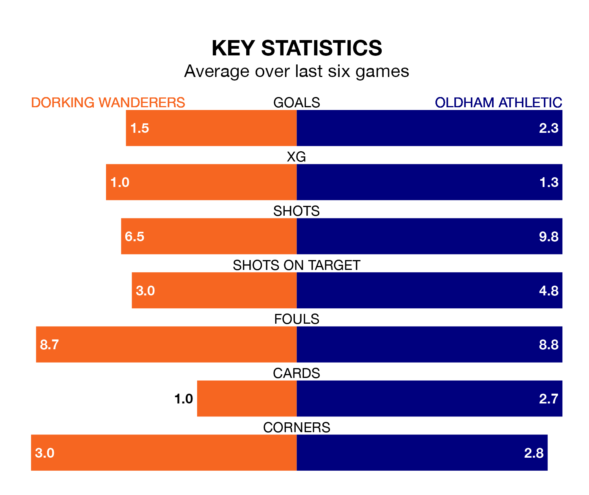

Oldham Athletic are strong favourites to take all three points despite Dorking Wanderers' home advantage in Saturday's match at the Meadowbank Stadium.
*Betting Company* are offering odds of 1.72 on Oldham sealing the win, with the visitors sitting ninth in National League table.
Dorking, who are 19th in the league and 11 points behind the Latics, are priced at 4.15 to win. A draw is set at 3.25.
In James Norwood, Oldham have one of the league's most on-form strikers so far this season. He has notched 14 goals in 25 appearances, to sit third in the scoring charts.
His goal rate of one every 144 minutes is quicker than that of Jason Prior, Dorking's top scorer with a goal every 167 minutes, and a total of eight goals in 18 games.
With 30 goals in 25 games so far this season, Wanderers are scoring at below the league average rate with 1.2 goals per game. And they are conceding more than average, letting in 44 goals at a rate of 1.8 per game.
Athletic, meanwhile, are above average scorers, with 1.6 goals per game, compared to a league average of 1.5. They have conceded 1.5 goals per game.
The hosts are in mixed form in National League, with two wins and a draw from their last six games.
With four wins and two losses over that period, the Latics's form is better – they have taken 12 points from 18, compared to Dorking's seven.
Dorking's last match was on Monday, a 2-1 win against Oxford City, with Niall McManus and Sebastian Bowerman getting the goals for Wanderers.
Oldham beat Hartlepool United 2-0 last time out, on December 30, with Josh Stones and Karl Mike Fondop-Talum on the scoresheet.
Updated: 12:57, 02/01/24